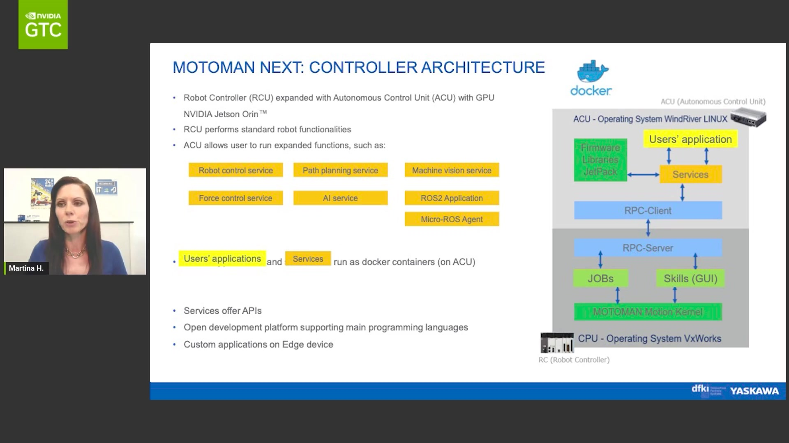

Executive Summary for Following Key AI Trends
1 Introduction: The AI Infrastructure Imperative
The rapid evolution of Artificial Intelligence (AI), particularly large models and generative capabilities, is creating unprecedented demand for high-performance computing infrastructure. Data centers and upcoming “AI factories” require massive data throughput, low-latency communication, and immense computational power. As a leading manufacturer of high-precision interconnect solutions , understanding and aligning with key AI trends is critical for sustained growth and market leadership. This summary synthesizes insights from recent technical presentations and market analyses, weighted by relevance, to outline strategic considerations.
2 Key AI Trends and Infrastructure Demands
Several interconnected trends are shaping the AI landscape and driving infrastructure requirements:
- Massive Data & Compute Scale:
- Training state-of-the-art AI models requires vast datasets and significant computing power, scaling from tens to hundreds, and projected to exceed 10,000+ GPUs for leading approaches. Platforms like Laiye AI Foundry and solutions for autonomous driving exemplify the complex, GPU-intensive workflows involved. Tesla’s infrastructure is noted as equivalent to tens of thousands of H100 GPUs, with exponential growth observed.
- Data processing pipelines (cleaning, filtering, deduplication, labeling) are crucial and demand high efficiency, with tools like NeMo Curator enabling significant speedups (e.g., 16x in deduplication). Automated annotation aims for further efficiency gains.
- This translates directly to demand for high-bandwidth, low-latency interconnects within and between servers, racks, and clusters, supporting protocols like PCIe 6.0/7.0 and CXL . Our demonstrated capabilities in CDFP and OSFP-XD solutions position us well here .
- Rise of AI Platforms & Ecosystems:
- Comprehensive AI platforms are emerging, integrating data management, training, inference, security, and cluster management (e.g., Laiye AI Foundry on NVAIE, YooDriveCloud) . Partnerships (e.g., Laiye/WMTech with NVIDIA) are common .
- The trend towards open foundation models and APIs creates opportunities for specialized applications but still relies on robust underlying hardware .
- Interconnects are the fundamental fabric enabling these complex software ecosystems to function efficiently.
- Edge AI & Real-Time Processing:
- Applications like intelligent robotics, autonomous systems, surgical assistance, and satellite data processing require significant AI processing at the edge.
- Platforms like NVIDIA Jetson Orin and IGX Orin are enabling this, demanding power-efficient, high-performance connectivity solutions suitable for diverse environments. Our expertise in micro-connectors and precision manufacturing is relevant here .

MOTOMAN NEXT Architecture - Simulation and Digital Twins:
- Simulation platforms like NVIDIA Isaac Sim and Omniverse are crucial for developing, training, and testing AI systems (robotics, autonomous vehicles, digital twins).
- These simulations require high-fidelity rendering and physics, demanding powerful GPUs and high-speed data transfer, further reinforcing the need for advanced interconnects.
- Evolving Commercial Models & Cost Reduction:
- The AI market is moving towards commercialization, with a focus on viable business models beyond subscriptions . In China, many AI companies are reportedly achieving profitability .
- Reducing inference costs is a major trend, with predictions of a 10x decrease potentially achievable through techniques like MoE and caching . While this might reduce per-inference compute, the overall scale and complexity of AI deployments continue to grow, sustaining demand for high-performance hardware.
3 Strategic Implications for Interconnect Manufacturing
- Capitalize on High-Speed Demand: Continue leading in high-bandwidth standards (PCIe 6.0/7.0, 112G+ SerDes) and form factors (CDFP, OSFP-XD) critical for AI accelerators and network fabrics . Support for emerging standards like CXL is essential .
- Enable Disaggregation & Scale-Up: Our solutions supporting disaggregated resources (PCIe 6.0 over cable ) and scale-up networks (PCIe 7.0 ) directly address architectural trends in AI infrastructure.
- Focus on Reliability & Precision: AI factories operate under intense load; the reliability and signal integrity of interconnects are paramount. Leverage our core competency in precision manufacturing .
- Collaborate Early: Continue engaging with leading AI chip makers, system designers, and hyperscalers early in their design cycles, integrating our interconnect solutions effectively .
- Monitor Edge AI Needs: As edge AI deployments grow, ensure our portfolio includes robust, miniaturized, and power-efficient connectors suitable for edge devices and diverse operating environments .
- Data-Driven Manufacturing: Explore applying AI internally, inspired by trends in intelligent automation , to optimize our own design, manufacturing, and quality control processes.
4 Visualizing AI Trends (Data from Notes)
Visualizations can illustrate key trends mentioned in the notes:
5 Conclusion
The AI revolution presents a significant opportunity. The immense scale of data processing, training, and inference required by modern AI directly translates into demand for the high-speed, reliable interconnect solutions that are our core strength . By continuing to innovate in high-bandwidth technologies, maintaining manufacturing excellence, collaborating closely with ecosystem partners, and monitoring edge computing trends, we can solidify our position as a critical enabler of the AI factories of the future. Key focus areas include PCIe 6.0/7.0, CXL, advanced form factors like CDFP/OSFP-XD, and ensuring reliability at scale.